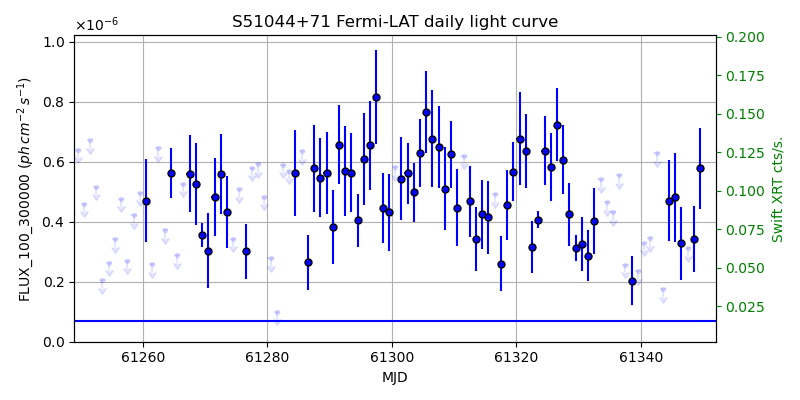
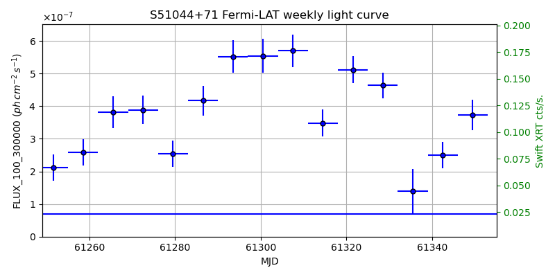
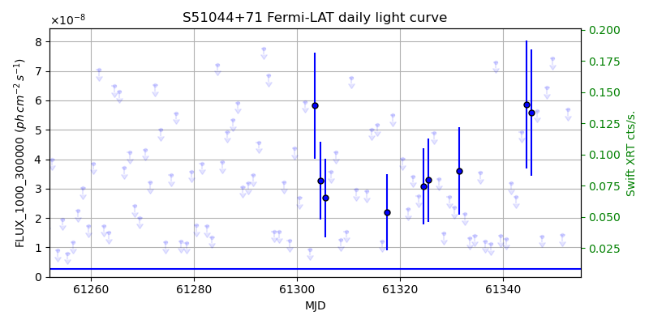
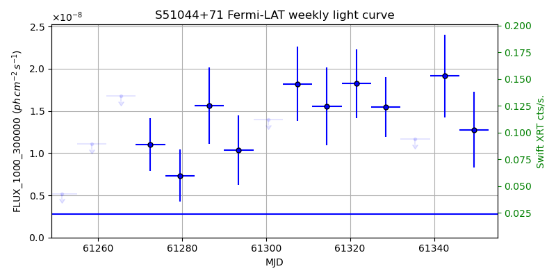

LAT Lightcurve site: https://fermi.gsfc.nasa.gov/ssc/data/access/lat/msl_lc/source/S5_1044p71
Swift site: https://www.swift.psu.edu/monitoring/source.php?source=S51044+71
NED: Query
Time of last update of this page: UT: 2026-11-06 16:22 (MJD: 61350.682)
| Property | Value |
|---|---|
| R.A. | 10:48:27.60 |
| Dec. | 71:43:37.2 |
| z | 1.150 |
| 3FGL SpectrumType | PowerLaw |
| 3FGL PL Index | 2.39 |
| 3FGL Flux_100_300000 | 6.90e-08 1 / (s cm2) |
| 3FGL Flux_1000_300000 | 2.80e-09 1 / (s cm2) |
| 3FGL Flux >200 GeV | 1.75e-12 1 / (s cm2) |
| 3FGL Extrap. Crab >200 GeV | 0.01 |
| 3FGL Flux After EBL Absorption >200GeV | 1.38e-14 1 / (s cm2) |
| 3FGL EBL Crab Fraction >200GeV | 0.00 |

| MJD | dMJD | Flux | dFlux | Frac3FGL | FracCrab>200GeV | EBLFracCrab>200GeV |
|---|---|---|---|---|---|---|
| 61345.50 | 0.50 | 4.82e-07 | 1.48e-07 | 6.99 | 0.05 | 0.00 |
| 61346.50 | 0.50 | 3.29e-07 | 1.22e-07 | 4.77 | 0.04 | 0.00 |
| 61347.50 | 0.50 | 3.12e-07 | 0.00e+00 | 0.00 | 0.00 | 0.00 |
| 61348.50 | 0.50 | 3.42e-07 | 1.11e-07 | 4.96 | 0.04 | 0.00 |
| 61349.50 | 0.50 | 5.79e-07 | 1.35e-07 | 8.39 | 0.06 | 0.00 |

| MJD | dMJD | Flux | dFlux | Frac3FGL | FracCrab>200GeV | EBLFracCrab>200GeV |
|---|---|---|---|---|---|---|
| 61314.50 | 3.50 | 3.48e-07 | 4.16e-08 | 5.05 | 0.04 | 0.00 |
| 61321.50 | 3.50 | 5.12e-07 | 4.21e-08 | 7.43 | 0.06 | 0.00 |
| 61328.50 | 3.50 | 4.64e-07 | 3.89e-08 | 6.73 | 0.05 | 0.00 |
| 61335.50 | 3.50 | 1.40e-07 | 6.79e-08 | 2.03 | 0.02 | 0.00 |
| 61342.50 | 3.50 | 2.50e-07 | 4.07e-08 | 3.62 | 0.03 | 0.00 |

| MJD | dMJD | Flux | dFlux | Frac3FGL | FracCrab>200GeV | EBLFracCrab>200GeV |
|---|---|---|---|---|---|---|
| 61345.50 | 0.50 | 5.60e-08 | 2.15e-08 | 20.06 | 0.15 | 0.00 |
| 61346.50 | 0.50 | 5.64e-08 | 0.00e+00 | 0.00 | 0.00 | 0.00 |
| 61347.50 | 0.50 | 1.38e-08 | 0.00e+00 | 0.00 | 0.00 | 0.00 |
| 61348.50 | 0.50 | 6.44e-08 | 0.00e+00 | 0.00 | 0.00 | 0.00 |
| 61349.50 | 0.50 | 7.42e-08 | 0.00e+00 | 0.00 | 0.00 | 0.00 |

| MJD | dMJD | Flux | dFlux | Frac3FGL | FracCrab>200GeV | EBLFracCrab>200GeV |
|---|---|---|---|---|---|---|
| 61314.50 | 3.50 | 1.55e-08 | 4.61e-09 | 5.56 | 0.04 | 0.00 |
| 61321.50 | 3.50 | 1.82e-08 | 4.07e-09 | 6.53 | 0.05 | 0.00 |
| 61328.50 | 3.50 | 1.55e-08 | 3.56e-09 | 5.54 | 0.04 | 0.00 |
| 61335.50 | 3.50 | 1.17e-08 | 0.00e+00 | 0.00 | 0.00 | 0.00 |
| 61342.50 | 3.50 | 1.91e-08 | 4.89e-09 | 6.86 | 0.05 | 0.00 |
--------------------------------------------------------- Using user-supplied coords: 10:48:27.60 71:43:37.2 2000 --------------------------------------------------------- FLWO UT night of: 2026-11-07 Local Sid. @ Midnight: 02:42 Sunset (-15.0) (local, UT): 18:39 01:39 Sunrise (-15.0) (local, UT): 05:36 12:36 Moonrise (local, UT): 05:16 12:16 Moonset (local, UT): Moon phase: 0.04 --------------------------------------------------------- AzTime LSID UT Obj_el Obj_az Mn_el Mn_az Sep. --------------------------------------------------------- 18:39 21:20 01:39 14.5 352.8 -35.5 278.9 85.8 19:09 21:50 02:09 13.9 355.2 -41.6 283.5 86.0 19:39 22:20 02:39 13.5 357.6 -47.5 288.8 86.1 20:09 22:50 03:09 13.3 0.0 -53.3 295.3 86.3 20:39 23:20 03:39 13.5 2.4 -58.7 303.4 86.4 21:09 23:50 04:09 13.9 4.9 -63.5 313.9 86.6 21:39 00:20 04:39 14.5 7.2 -67.5 328.0 86.8 22:09 00:50 05:09 15.5 9.5 -70.0 346.2 86.9 22:39 01:20 05:39 16.6 11.6 -70.5 6.9 87.1 23:09 01:51 06:09 18.0 13.6 -68.8 26.6 87.3 23:39 02:21 06:39 19.6 15.5 -65.4 42.5 87.5 00:09 02:51 07:09 21.4 17.1 -60.9 54.4 87.6 00:39 03:21 07:39 23.4 18.6 -55.8 63.5 87.8 01:09 03:51 08:09 25.5 19.8 -50.2 70.6 88.0 01:39 04:21 08:39 27.7 20.7 -44.4 76.4 88.2 02:09 04:51 09:09 30.0 21.4 -38.4 81.4 88.4 02:39 05:21 09:39 32.3 21.7 -32.4 85.8 88.6 03:09 05:51 10:09 34.7 21.8 -26.3 89.9 88.7 03:39 06:21 10:39 37.1 21.4 -20.2 93.7 88.9 04:09 06:51 11:09 39.4 20.6 -14.2 97.5 89.1 04:39 07:21 11:39 41.6 19.5 -8.1 101.2 89.3 05:09 07:52 12:09 43.6 17.8 -1.2 105.0 89.5 05:36 08:19 12:36 45.3 16.0 3.4 108.6 89.6 --------------------------------------------------------- Source never above horizon of 55.0 deg. Dark hours >55 deg.: 0.00